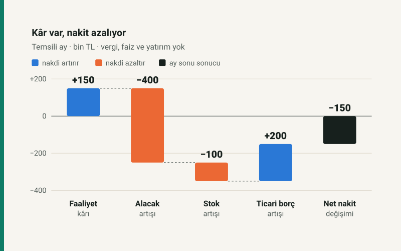

Satışın yapılması ile paranın gelmesi farklı tarihlerdir
Cirosu ve kârı artan bir işletmenin banka bakiyesi azalabilir. Satışlar tahsil edilmediyse, stok için peşin ödeme yapıldıysa veya tedarikçi vadesi kısaldıysa büyüme ek finansman gerektirir. Satış hedefinin yanında tahsilat ve ödeme takvimi kurulmadığında, kârlı görünen büyüme nakit açığı doğurabilir.
Eylül 2026’da bu ayrım neden önemli?
TCMB, 10 Eylül 2026 toplantısında bir hafta vadeli repo ihale faizini %37 düzeyinde sabit tuttu. Bu oran, işletmenin bankadan kullanacağı ticari kredinin fiyatı değildir. Kredi türü, vade, teminat, ücretler ve işletmenin risk değerlendirmesi gerçek finansman maliyetini değiştirir. Güncel karar, nakit açığının maliyetini ayrıca hesaplamak için bir bağlam sunar; bütün işletmelere uygulanabilecek tek bir borçlanma oranı vermez. Kaynak: TCMB, 10 Eylül 2026 faiz duyurusu.
Fiyatlar değişirken yalnızca TL cinsinden ciroyu izlemek de eksik kalır. Birim fiyat %25 yükselmiş ve satış adedi değişmemişse ciro %25 artar; daha fazla ürün satılmış olmaz. Buna karşılık stok yenilemenin TL maliyeti ve müşteriden beklenen alacak büyüyebilir. Bu nedenle üç ayrı soruyu birlikte sormak gerekir: Kaç birim sattık, her satıştan ne kadar katkı kaldı ve parasını ne zaman alacağız?
150.000 TL kâr varken nakit nasıl 150.000 TL azalır?
Aşağıdaki temsili işletmenin aylık cirosu 800.000 TL’den 1.000.000 TL’ye çıkıyor. Satılan malın maliyeti cironun %70’i, diğer faaliyet gideri 150.000 TL olsun. Önceki ayın 90.000 TL faaliyet kârı, bu ay 150.000 TL’ye yükselir. Bu tablo tek başına olumlu görünür; fakat tahsilat hakkında bilgi vermez.
Nakit köprüsünü sade tutmak için örnekte vergi, KDV, faiz, amortisman, yatırım harcaması ve kredi hareketi bulunmuyor. Bütün satışlar aynı dönemde gelir olarak kaydediliyor; iadeler ve tahsil edilemeyen alacaklar yok. Stoklar maliyetle, ticari alacaklar satış tutarıyla izleniyor. Bunlar Türkiye’deki işletmelerin ortalaması değil, hesap varsayımlarıdır.
| Kalem | Nakit hesabına etkisi |
|---|---|
| Faaliyet kârı | +150.000 TL |
| Ticari alacak artışı | −400.000 TL |
| Stok artışı | −100.000 TL |
| Ticari borç artışı | +200.000 TL |
| Faaliyetten net nakit değişimi | −150.000 TL |
Alacak artışı, kayda giren satışın bir bölümünün henüz tahsil edilmediğini gösterir. Stok artışı, satılan malların maliyetinden daha fazla mal alındığı anlamına gelir. Ticari borç artışı ise alımların bir bölümünün henüz ödenmediğini, tedarikçinin işletmeyi finanse ettiğini gösterir. Bu örnekte dönem başındaki 250.000 TL nakit, dönem sonunda 100.000 TL’ye iner.

Hesabı tahsilat ve ödemelerden de kontrol edebiliriz: 1.000.000 TL satıştan alacak artışı çıkarılınca tahsilat 600.000 TL olur. 700.000 TL satılan mal maliyetine 100.000 TL stok artışı eklenince alım 800.000 TL’dir. Bunun 200.000 TL’si ticari borç artışıyla ertelendiği için tedarikçiye ödeme 600.000 TL olur. Diğer 150.000 TL gider de ödendiğinde 600.000 − 600.000 − 150.000 = −150.000 TL kalır.
Kârın nakit dışı unsurlar ve işletme sermayesi değişimleriyle düzeltilmesi, nakit akışı analizinin temel ayrımıdır. Buradaki köprü basitleştirilmiştir; bir şirketin tam finansal tablosu veya mevzuata uygun raporlama şablonu olarak kullanılmamalıdır. Kaynak: IFRS Foundation, IAS 7 — Nakit Akış Tablosu.
Vade uzadığında kaç lira daha bağlanır?
Ayrı bir durağan faaliyet örneği kuralım: Ay 30 gün, aylık satış 1.000.000 TL, aylık mal maliyeti 700.000 TL olsun. Satış ve alımlar günlere eşit yayılsın; ortalama tahsilat süresi 45, stokta kalma süresi 60, tedarikçiye ödeme süresi 30 gün kabul edilsin. Stok düzeyinin değişmediği bu örnekte alımlar ile satılan mal maliyeti birbirine eşittir.
| Bileşen | Hesap | Tutar |
|---|---|---|
| Ticari alacak | 1.000.000 / 30 × 45 | 1.500.000 TL |
| Stok | 700.000 / 30 × 60 | 1.400.000 TL |
| Ticari borç | 700.000 / 30 × 30 | −700.000 TL |
| Alacak + stok − ticari borç | 2.200.000 TL |
Nakit dönüş süresi 60 + 45 − 30 = 75 gündür. Ancak 75 günü tek bir günlük maliyetle çarpmak yukarıdaki 2,2 milyon TL’yi vermez: alacak satış fiyatıyla, stok ve tedarikçi borcu maliyetle ölçülmektedir. Ayrıca bu tutar asgari kasa ihtiyacını, vergileri ve yatırım harcamalarını içermez.
Satış miktarı, marj ve vadeler değişmeden hem fiyatlar hem birim maliyetler %10 yükselirse aynı faaliyet düzeninde bağlı tutar 2.420.000 TL’ye çıkar. Hiç ek ürün satmadan 220.000 TL daha finansman gerekir. İşletmenin kendi nakdi bunu karşılayabilir; tutarın tamamının mutlaka yeni kredi olacağı söylenemez.
Tahsilat süresini 45 günden 35 güne indirmek ise bu varsayımlarla yaklaşık 1.000.000 / 30 × 10, yani 333.333 TL nakdi serbest bırakır. Bu bir defalık geçiş etkisidir; her ay yeniden kazanılan kâr değildir. Daha kısa vade uğruna verilen indirim veya kaybedilen satış varsa, faydayla birlikte hesaplanmalıdır.
Peşin indirimini faizle nasıl karşılaştırmalı?
Tedarikçi aynı mal için bugün 98.000 TL veya 30 gün sonra 100.000 TL istesin. İndirimi kullanmamak, bugün 98.000 TL’yi elde tutup 30 gün sonra 100.000 TL ödemeye benzer. Otuz günlük finansman maliyeti 2.000 / 98.000, yaklaşık %2,04tür. Yüzdeyi 100.000 TL’ye bölmek, elde tutulan finansman tutarını yanlış seçer.
Yalnızca kıyas için, aynı koşulun bir yıl boyunca yinelenebildiği varsayımıyla 365 günlük bileşik karşılık (100.000 / 98.000)^(365 / 30) − 1, yaklaşık %27,86 olur. Bu oran bir banka teklifi değildir; gerçek yıllık maliyet hesabında vergiler, ücretler, gün hesabı ve ödeme takvimi ayrıca bulunur. Karar için en temiz başlangıç, aynı 30 gündeki bütün nakit maliyetlerini karşılaştırmaktır.
Erken ödeme için kullanılacak 98.000 TL, haftaya ödenecek maaşı veya zorunlu bir alımı karşılayacak paraysa indirim avantajı tek başına yeterli olmaz. Öte yandan tedarikçi borcunu sürekli uzatmak da maliyetsiz değildir: indirim kaybı, tedarik aksaması veya sözleşmesel sonuçlar doğabilir. Vade kararı, ticari ilişki ve ödeme gücüyle birlikte değerlendirilmelidir.
Satış hedefinin yanına 13 haftalık nakit planı koyun
Pratik bir izleme tablosunda her hafta için açılış bakiyesi, beklenen tahsilatlar, tedarikçi ödemeleri, ücretler, vergiler, kredi ödemeleri ve kapanış bakiyesi yer alabilir. Sipariş tarihini tahsilat tarihi yerine kullanmayın. Henüz kesinleşmemiş satışları ve gecikme ihtimali olan alacakları ayrı senaryoya taşıyın; kullanılmamış kredi limitini de banka bakiyesi gibi göstermeyin.
Planı en az üç değişkenle zorlayın: tahsilatların on gün gecikmesi, satış adedinin düşmesi ve birim maliyetin yükselmesi. Her biri farklı sorun yaratır. Tahsilat gecikmesi kârı hemen değiştirmeden nakdi bozabilir; maliyet artışı hem katkıyı hem stok finansmanını etkiler. Hangi haftada açık oluştuğu, ay sonu toplamı kadar önemlidir.
Başabaş ve hedef kâr aracı satış başına katkıyı ve giderleri karşılayan adedi hesaplar. Tahsilat vadelerini modellemez; sonucunu bu nakit planının yerine koymayın. Daha uzun dönemli yatırım kararlarında ise yatırım fizibilitesi aracında nakit akışlarının zamanını ayrıca değerlendirebilirsiniz.
Kaynaklar ve kapsam
Güncel faiz bağlamı TCMB’nin 10 Eylül 2026 duyurusuna; kâr ile nakit akışının ayrımı IFRS Foundation’ın IAS 7 açıklamasına dayanır. Bağlantılar tarihinde kontrol edildi. Bütün işletme rakamları ve ödeme teklifleri bu yazı için kurulmuş varsayımsal örneklerdir; sektör ortalaması, güncel kredi teklifi veya getiri tahmini değildir.
İlk köprü bir aylık değişimi, vade tablosu ise ayrı bir durağan faaliyet düzenini gösterir; iki tablo aynı işletmenin tek bir bilançosu gibi birleştirilmemelidir. Yüzdeler iki ondalığa, gösterilen işletme sermayesi tutarları en yakın liraya yuvarlanmıştır. Yazı bir finansal okuryazarlık incelemesidir; şirketin muhasebe kayıtları ve sözleşmeleriyle yapılacak değerlendirmeyi tamamlar. Düzeltme yaklaşımı için yayın ilkelerine bakabilirsiniz.